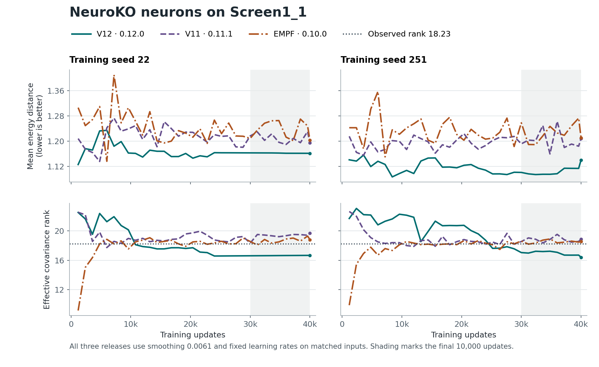

NeuroKO / Neuronal knockout benchmark
ParticleGAN at
40,000 updates
ParticleGAN v12 produced the closest match to observed neuronal gene expression on both training seeds. The longer comparison covers one development group. At 3,600 updates across three groups and six fresh seeds, independently tuned v11 led.
How the five configurations compared
We trained each configuration on the same cells from two screens and evaluated on a third, Screen1_1. For each of four gene knockouts, we compared 256 generated profiles with observed neurons in a 30-dimensional expression space fitted on the training cells. Lower mean energy distance indicates a closer match between the distributions.
| Configuration | Seed 22 | Seed 251 | Two-seed mean | Final 10k mean |
|---|---|---|---|---|
| v12 0.12.0 | 1.16185 | 1.14060 | 1.15122 | 1.13280 |
| Matched v11 0.11.1 | 1.19505 | 1.20880 | 1.20192 | 1.20672 |
| Matched EMPF 0.10.0 | 1.20320 | 1.21103 | 1.20712 | 1.23375 |
| Independently tuned v11 0.11.1 | 1.21487 | 1.21234 | 1.21361 | 1.19289 |
| Independently tuned EMPF 0.10.0 | 1.27087 | 1.17641 | 1.22364 | 1.24407 |
The matched controls use v12’s learning rates, latent noise, prior penalty and optimizer smoothing. Each independently tuned control uses its own selected settings. The final 10k mean weights each interval by its duration. Per-target scores, times and trajectories ↗

What replicated at 3,600 updates?
Across three development groups, v12 beat matched EMPF on all six fresh seed means, averaging 0.93671 against 0.96530. Independently tuned v11 averaged 0.93298. Its advantage over v12 was small relative to the variation across seeds.
The benchmark required v12 to beat all four controls to advance to the reserved biological holdout, Screen1_0. The six-seed result missed that threshold. The 40,000-update result therefore establishes a lead for two training seeds on a single development group. Six-seed scores and holdout decision ↗
Reproduce the comparison
The benchmark uses human induced neurons from NeuroKO and holds out each development screen in turn for the shorter replication. The long run trains on Screen1_3 and Screen1_4 and scores knockouts of GLCCI1, MAMSTR, PLEKHA1 and SLC2A4RG in Screen1_1.
- Shared architecture
- 64 learned particles, 16 latent dimensions, batch size 64
- v12 optimizer
unified_v12, smoothing 0.0061- Fixed learning rates
- Generator 0.014, critic 0.0049, particles 0.0406
- Prior parameters
- Latent noise 0.15, prior penalty 0.1
- Benchmark loss settings
- Hollow self-coupling and relativistic weight 2 override the v12 preset defaults.
Follow the benchmark README for the two-GPU commands, release-specific installations, input checks and training checkpoints. The study notes include the optimizer-only and smoothing comparisons. Run the benchmark ↗ · Study notes at the benchmark commit ↗
Sam Ogden and Geraldine Rodschinka deposited the NeuroKO neuronal and astrocyte data under Creative Commons Attribution 4.0. Both processed files establish the shared target panel. The reported fits use the neuronal data. Original dataset ↗ · CC BY 4.0 ↗
Download the v12 weights
The original runs recorded scores and curves. These downloadable checkpoints come from deterministic GPU replays of both seeds. Each file includes the trained model, the fitted gene projection and its training record. The weights are available under CC BY 4.0.
SHA-256 checksums · Release details ↗ · Model card and sampling instructions ↗